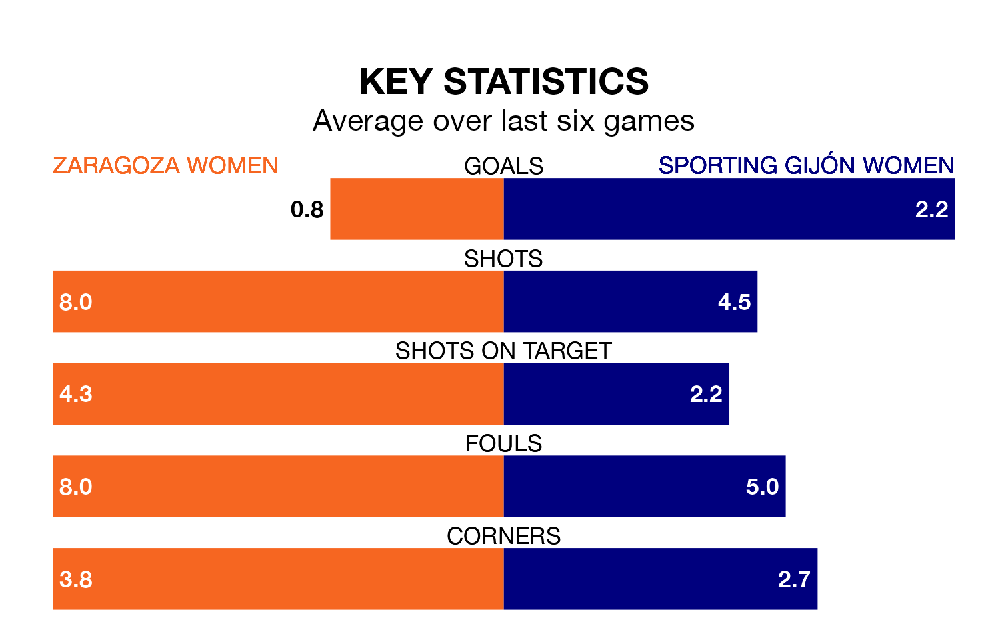

Zaragoza Women are on a terrible run ahead of hosting Sporting Gijón Women on Sunday, with just two points collected from their last six games.
Zaragoza have picked up two draws and four losses in their last six Segunda Federación Femenina games, and face a Sporting side whose last six games have brought four wins and one draw.
Sporting are zero in the table after 26 games, of which they have won seven and drawn five, earning 26 points.
Zaragoza are 12 places behind the visitors in 12th, with 10 wins and seven draws putting them on 37 points.
With 37 goals in 26 games so far this season, the home team are scoring more than average in the league with 1.4 goals per game. And they are conceding fewer than average, letting in 30 goals at a rate of 1.2 per game.
Sporting, meanwhile, are average scorers, with 1.3 goals per game. They have conceded 1.7 goals per game.
Zaragoza's last match was on April 6, a 1-1 draw against Real Oviedo Women, with getting the goal for Zaragoza.
Sporting beat Real Sociedad II Women 4-3 last time out, on April 7, with on the scoresheet.
Updated: 10:01 (UTC), 12/04/24